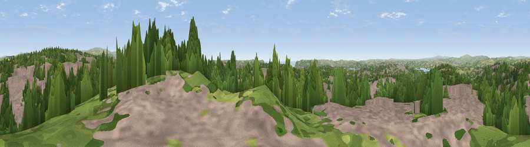

Viewpoint near Crownhill
#13367 in England · top 24% of its area beats it · near CrownhillThe view, rendered

A 360° render of this exact spot computed from the terrain model, tree cover and land cover — summer colours, afternoon light, calibrated against photographs of famous viewpoints. Real trees, hedges and buildings will differ in detail.
The panorama
Grey silhouette: terrain skyline in each direction (720 bearings, Earth curvature and refraction included). Dashed green: skyline with trees (+15 m) and buildings (+8 m) as obstacles. Blue strip: how far the ground is visible on each bearing.
Where the view opens
Wedge length = distance to the farthest visible ground on that bearing (vegetation-aware). Rings at 10, 25 and 50 km.
What fills the view
43% built-up · 40% woodland · 14% grassland · 2% cropland ·
Angular shares of the visible panorama (visual magnitude), not map area. Landscape diversity 0.49 (0–1 Shannon).
Key numbers
More beautiful places nearby
The staircase of upgrades: each row has a higher view potential than everything closer. Driving times are estimates from straight-line distance, calibrated against real road routing — check an actual route before setting out.
| Place | Direction | Drive | Score |
|---|---|---|---|
| Viewpoint near Roborough | N · 3 km | ~8 min | 61.7 |
| Viewpoint near Shaugh Prior | NE · 7 km | ~14 min | 73.2 |
| Viewpoint near Shaugh Prior | NE · 7 km | ~14 min | 77.0 |
| Viewpoint near Lee Moor | ENE · 8 km | ~16 min | 82.7 |
| Viewpoint near Downderry | WSW · 16 km | ~28 min | 83.5 |
| Viewpoint near Hope | SE · 28 km | ~45 min | 84.4 |
| Pencarrow Head | WSW · 34 km | ~52 min | 86.0 |
| Viewpoint near Stenalees | W · 48 km | ~69 min | 88.0 |
50.41380, -4.13122 · source: screening · position refined by local search. Computed location — check access rights before visiting.